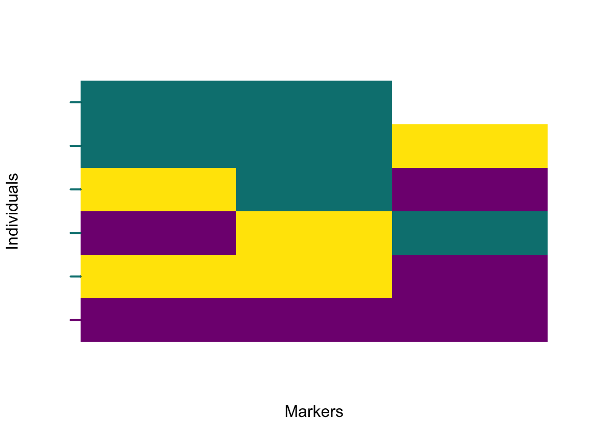

Chapter 2 Quick start
Natália Martínková and Stuart J. E. Baird
The package diemr incorporates the diagnostic index expectation maximisation algorithm used to
estimate which genomic alleles belong to which side of a barrier to geneflow. To start
using diemr, load the package or install it from CRAN if it is not yet available:
# Attempt to load a package, if the package was not available, install and load
if(!require("diemr", character.only = TRUE)){
install.packages("diemr", dependencies = TRUE)
library("diemr", character.only = TRUE)
}Next, assemble paths to all files containing the data to be used by diemr.
Here, we will use a tiny example dataset that is included in the package for illustrating
the analysis workflow. A good practice is to check that all files contain data in the
correct format for all individuals and markers. Additionally, the analysis will need a
list with ploidies for all genomic compartments and individuals, and a vector with
indices of samples that will be included in the analysis.
filepaths <- system.file("extdata", "data7x3.txt", package = "diemr")
# Analysing six individuals
samples <- 1:6
# Assuming diploid markers of all individuals
ploidies = rep(list(rep(2, nchar(readLines(filepaths[1])[1]) - 1)), length(filepaths))
CheckDiemFormat(files = filepaths,
ChosenInds = samples,
ploidy = ploidies)
# File check passed: TRUE
# Ploidy check passed: TRUEIf the CheckDiemFormat() function fails, work through the error messages and fix
the stored input files accordingly. The algorithm repeatedly accesses data from the
harddisk, so seeing the passed file and variable check prior to the analysis is critical.
To estimate the marker polarities, their diagnostic indices and support, run the function
diem() with default settings. Here, we have only one file with data, so paralelisation
is unnecessary, and we set nCores = 1. The Windows operating system only allows for
nCores = 1. Other operating systems can process multiple genomic compartments (e.g.
chromosomes) in parallel, the analysis of different genomic compartment files running on
multiple processors.
res <- diem(files = filepaths,
ploidy = ploidies,
markerPolarity = list(c(FALSE, FALSE, TRUE)),
ChosenInds = samples,
nCores = 1)The result is a list, where the element res$DI contains a table with marker
polarities, their diagnostic indices and support.
res$DI
# newPolarity DI Support Marker
# 1 FALSE -4.872256 15.930181 1
# 2 TRUE -3.520647 18.633399 2
# 3 TRUE -13.274822 6.130625 3The column newPolarity means that marker 1 should be imported for subsequent
analyses as is, and markers 2 and 3 should be imported with 0 replaced with 2 and 2
replaced with 0 (hereafter ‘flipped’ \(0 \leftrightarrow 2\)). The marker 3 has the lowest diagnostic
index and low support, indicating
that the genotypes scored at this marker are poorly related to the barrier to geneflow
arbitrated by the data.
With the marker polarities optimised to detect a barrier to geneflow, a plot of the polarised genome will show how genomic regions cross the barrier. First, the genotypes need to be imported with optimal marker polarities. Second, individual hybrid indices need to be calculated from the polarised genotypes. And last, the data will be plotted as a raster image.
genotypes <- importPolarized(file = filepaths,
changePolarity = res$markerPolarity,
ChosenInds = samples)
HI <- hybridIndex(res$I4)
plotPolarized(genotypes = genotypes,
HI = HI[samples])
CAUTION: This is just a quick start to get you started! For real datasets you will use the diagnostic index (DI) to filter the full set of sites you have analysed with diem in order to plot only those markers relevant to any barrier detected in the analysis. See Chapter 7 for guidelines.